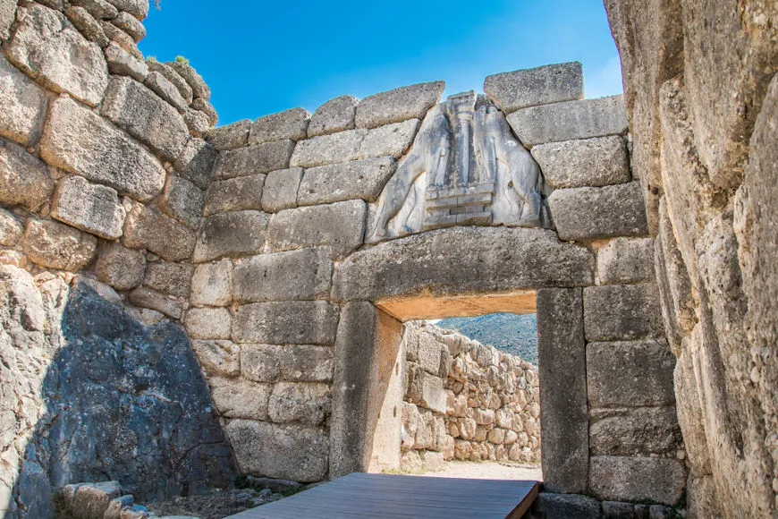
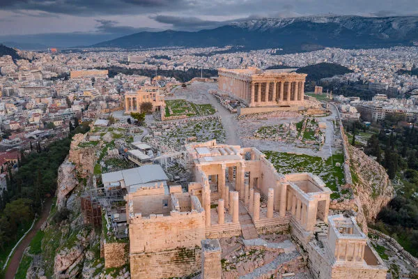
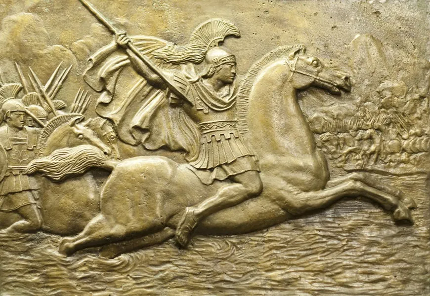

Ruínas de uma construção feita pelos micênicos, povo
indo-europeu que desapareceu por volta de 1200 a.C.
cidade

A acrópole de Atenas abriga um dos prédios mais conhecidos dos gregos: o Partenon.

Em 336 a.C., Alexandre da Macedônia foi coroado rei. Ele foi o responsável por expandir seu império pelo Oriente, derrotando os persas.